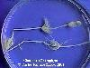

Prácticas de Biología marina: algas
verdes macroscópicas
Orden Charales
Página de procedencia:
Algas_verdes.htm
- Talo de organización filamentosa; filamentos haplósticos
articulados, con nudos y entrenudos diferenciados, con o sin corticación
de células periféricas
- Ejes principales de crecimiento indefinido
- Ramas laterales verticiladas
|

|
- Gametangios diferenciados con cubierta de células estériles
- Comprende una sola familia: Characeae (Caráceas),
con varios géneros de morfología similar, dos de los cuales,
pueden encontrarse en aguas salobres en deltas, estuarios y lagunas litorales
de la Península Ibérica (véase Gallardo & al., 1985;
Llimona & al., 1985):
- Chara, con filamentos corticados
- Lamprothamnium, con filamentos desnudos
Chara L., 1753. Dos especies citadas en el litoral mediterráneo
de la P.I. (Gallardo & al. 1985).
Aunque no se ha citado ninguna especie viviendo en el
mar en Cádiz o en Huelva, es posible encontrar algunas en lagunas salobres
litorales (véase Sánchez-García & al. 1992).
Referencias bibligráficas
- Gallardo, T., A. Gómez-Garreta, M. A. Ribera, M.
Alvarez & F. Conde (1985). A preliminary checklist of Iberian
benthic marine algae. Real Jardín Botánico, Madrid.
- Llimona, X. (ed.,1985). Historia Natural dels
Països catalans. 4. Plantes Inferiors. Ed. Enciclopedia Catalana
S.A., Barcelona
- Sánchez-García, I., C. Martínez-Ortega
& P. García-Murillo (1992). Guía de las plantas
acuáticas de las reservas naturales de las lagunas de Cádiz.
Patronato de las Reservas Naturales de las Lagunas de Cádiz.
Página actualizada
el 22-02-2001